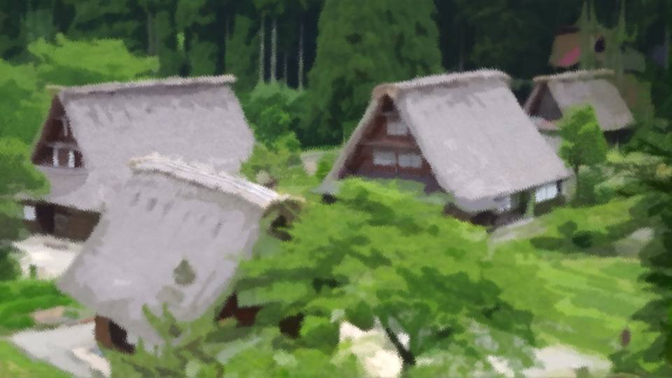
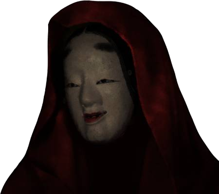

Script 000021B1
――あれから何年経っただろうか。

この荒田で獲れる恵みのおかげで、今でも大した病気はしていない。
さすがに山道を歩くことは控えているが、一応は健在である。
さすがに山道を歩くことは控えているが、一応は健在である。
大魔女にはこの集落において様々な儀式を執り行う義務がある。
特に法要では鉈やメイスを使うので、それなりの腕力も要求される。
もうそろそろ大魔女を引退した方がいいだろうか。
あとはもう若い世代に託し、私は静かにその時を待つのがいいのではないか。
特に法要では鉈やメイスを使うので、それなりの腕力も要求される。
もうそろそろ大魔女を引退した方がいいだろうか。
あとはもう若い世代に託し、私は静かにその時を待つのがいいのではないか。
しかし……。
何か大切なことを忘れている気がする。
私は数年間、何かの知らせを待っている。
それは何だっただろうか。
数年間、何の連絡もないのだ。
この集落のために必要なことを知らせてくれる人が来るはずなのに――。
何か大切なことを忘れている気がする。
私は数年間、何かの知らせを待っている。
それは何だっただろうか。
数年間、何の連絡もないのだ。
この集落のために必要なことを知らせてくれる人が来るはずなのに――。
私は杖を持ち、家を出る。

「大魔女様、おはようございます」
「ああ、おはよう」
今日も集落の者たちは元気だ。
この寒空の中、皆農作業に勤しみ、集落での平穏な生活を謳歌している。
ここは、とても平和な場所。
「ああ、おはよう」
今日も集落の者たちは元気だ。
この寒空の中、皆農作業に勤しみ、集落での平穏な生活を謳歌している。
ここは、とても平和な場所。

そう、ここはどこよりも平和な場所。

集会場に安置されている1人の少女。

トミと呼ばれる少女のミイラ。
この集落を象徴する偶像だ。
400年近く前に緑の目を自ら取り出し自害した少女。
この集落を守るために命を捨てたのだ。
この集落を象徴する偶像だ。
400年近く前に緑の目を自ら取り出し自害した少女。
この集落を守るために命を捨てたのだ。
なぜこの少女は自害したのか。
命を捨てることが、なぜ集落を守ることにつながるのか。
それは…… 確か……。
命を捨てることが、なぜ集落を守ることにつながるのか。
それは…… 確か……。
「大魔女様」
ミイラと向き合っていた私の背に、住人の声がかかる。
「お客人です。篠崎さんとおっしゃる方が……」
「篠崎……？」
誰だっただろう、聞いたことのある名前だ。
確か、何年か前に……。
「お客人です。篠崎さんとおっしゃる方が……」
「篠崎……？」
誰だっただろう、聞いたことのある名前だ。
確か、何年か前に……。